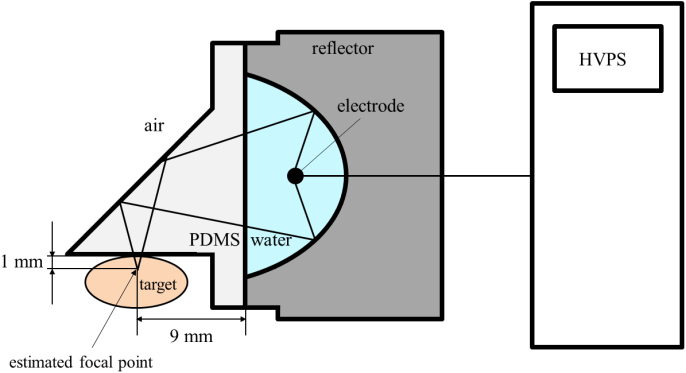
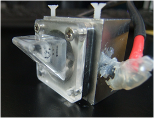
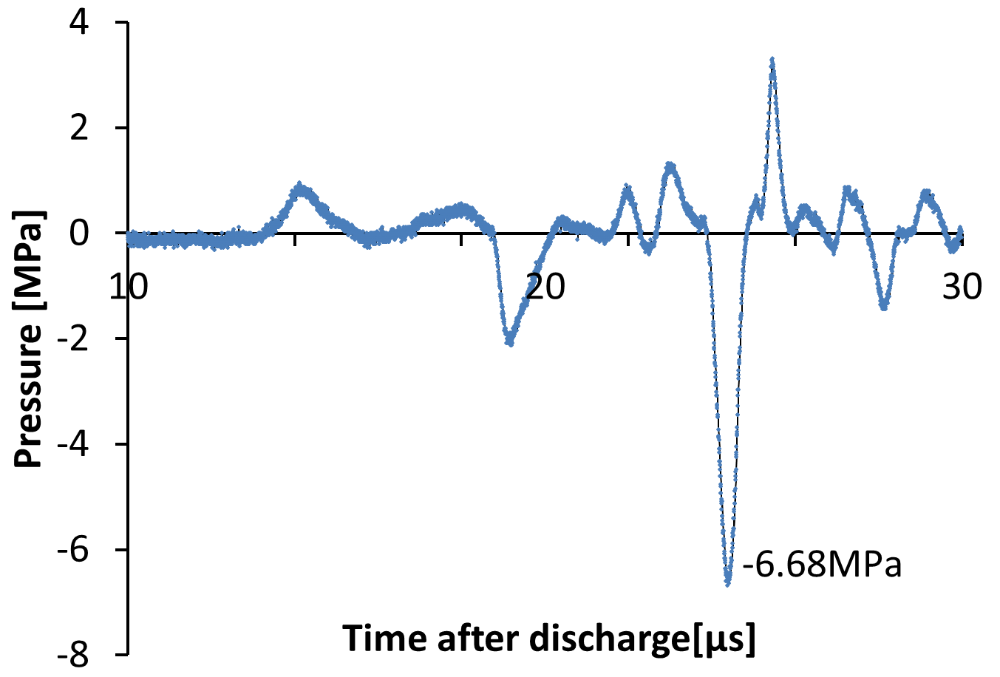

|
Development of expansion wave generator
Introduction
In addition
to conventional application, ESWL, the effects of shock waves on
biological
soft tissues have attracted attention recently. The increase of
capillaries and
the blood flow was observed after shock wave radiation. Also, the cell
growth
can be controlled by shock waves. However, the mechanisms of those new
effects
remain unknown.
Generation of expansion wave A shock wave reflects at a boundary surface between two media that have different acoustic impedances. If the shock wave incidence is normal to the boundary, the reflectance of the pressure R is expressed as:
where the pressure of the incident wave
is pi, pressure of the reflected
wave is pr, acoustic impedance of the medium
on the incidence side is z1, and acoustic impedance of the
medium on the transmission side is z2. This equation shows that the
reflectance from a medium with higher acoustic impedance to one with
lower
impedance is negative. When a shock wave is reflected at such a
surface, the
reflected wave is believed to become an expansion wave. 
Figure 1:
Expansion wave generator
Visualization of expansion wave
We
used a schlieren imaging technique to visualize the flow in order to
understand
the wave in perspective. We observed waves with a high-speed camera
(HPV-2,
Shimadzu Co., Ltd) using a shooting speed of 1 Mfps (1 µs/frame) and an
exposure time of 0.25 µs.
Pressure measurement To measure the waveform, a hydrophone (Müller-Platte Needle Probe, Dr. Müller Instruments) was used. The peak pressure was −5.52 ± 1.23 MPa (n=10) with discharged voltage 4kV. The typical waveform is shown in Figure 3. 
Figure 3:
Typical waveform of expansion wave Conclusion
We proposed
and developed an expansion wave generator with shock wave reflection.
Thorough
visualization and pressure measurement, the generation and focusing of
expansion wave were observed. Related Papers:
|

|
Contact us Japanese | English |
|
» TOP » Research » Device development for fundamental medicine
|